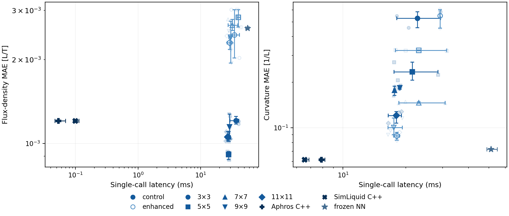
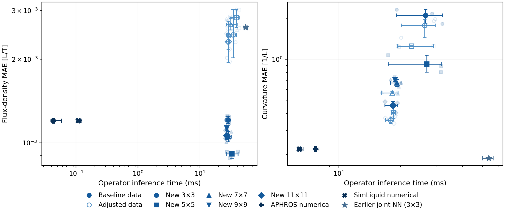
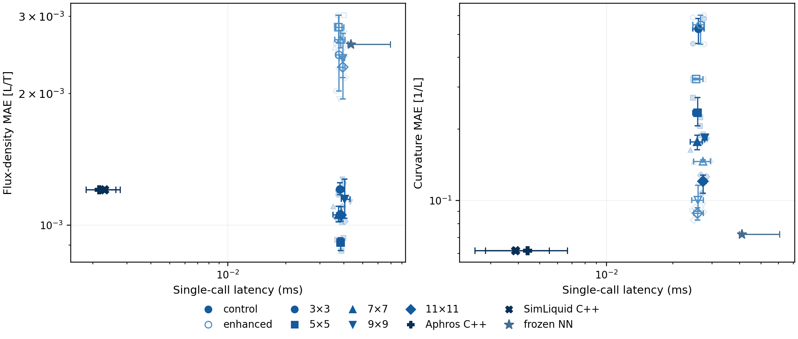

图表里比较的是哪些方法？
SimLiquid／APHROS的传统数值算法：这两个名称指流体求解软件。通量由软件中的PLIC算法计算：先估计界面方向、重建直线，再计算穿过网格面的液体量；曲率由粒子串拟合算法计算。本轮直接调用相应C++代码，只测局部算子。
此前训练的3×3联合网络：本项目此前训练并用于模拟的网络，输入3×3邻域的体积分数，通过共享编码预测通量和曲率。本轮固定其权重，作为已有模型的参考。这不是“论文作者发布的原始权重”的意思。
本次重训的3×3至11×11网络：为比较邻域和训练数据而训练的通量网络、曲率网络。每组都训练12000步，使用三个配对随机种子，参数量基本相同。报告中的31.9%、26.4%等改善比例，来自这些同预算重训组的比较；此前3×3联合网络的结构和训练经历不同，单独列作参考。
两种训练数据：“基准训练数据”采用常规局部三次曲线采样；“调整后的训练数据”增加近水平或竖直、弱曲率以及接近纯液体或纯气体的样本。名称只说明采样不同，不预先认定哪种数据更好。
高度函数曲率参考：另一种传统曲率算法，通过相邻液柱的高度变化估计曲率。它单独参加比较，没有作为任何神经网络的输入或修正项。
图中“Earlier joint NN (3×3)”对应此前训练的3×3联合网络；“New 3×3 NN”等标记对应本次重训的相应邻域网络；“Baseline data / Adjusted data”对应上述两种训练数据。“MAE”是平均绝对误差，越小越好；每个随机种子对应一次独立训练。
网格加密后，误差停在哪里？
以下数字统一来自独立的圆、椭圆与弱正弦界面测试，每档网格2312个样本。误差越小越好；新训练模型取三个种子的平均，此前训练的3×3联合网络为单个固定参考。完整数据、其他几何和训练重复之间的波动保留在后面的图表中。
通量确实出现了误差平台。5×5对照模型的通量密度误差，从N128的0.0009123变成N512的0.0009139，几乎不变，反而增加约0.18%。此前训练的3×3联合网络则一直停留在0.0026左右。
网格每边加密4倍，二维单元数增加16倍，通量误差仍没有继续下降。这里的“平台”指本次已测网格范围内的表现。
曲率不只是停住，而是误差增大
| 网格N | 此前训练的3×3联合网络 曲率误差 | 调整后的训练数据11×11 曲率误差 |
|---|---|---|
| 128 | 0.0722 | 0.0885 |
| 256 | 0.1082 | 0.1789 |
| 512 | 0.1879 | 0.3575 |
从N128到N512，此前训练的3×3联合网络的物理曲率误差增至2.60倍，调整后的训练数据11×11模型增至4.04倍。
局部预测有所改善，但还没有得到稳定的细网格收敛。11×11模型的无量纲曲率误差在N128至N512仍约为0.00070，换算成物理曲率时要除以网格间距，因此小偏差会随网格加密被放大。
实际APHROS粒子曲率在同一测试中也由0.0617增至0.219；独立高度函数参考则由0.000211降到0.0000272。粒子法和高度函数的表现不同，需要分别讨论。
相同精度比时间，代价有多大？
固定N512、每次处理4096个邻域，采用同一CPU核心、同双精度。只计通量或曲率的完整局部算子推理；数值法自身必要的法线、PLIC重构与粒子拟合包含在内，压力求解和模拟推进不包含在内。
| 算子 | 方法 | 误差 | 推理时间 [毫秒] |
|---|---|---|---|
| 通量 | APHROS数值算法 | 0.001203 | 0.0428 |
| 通量 | SimLiquid数值算法 | 0.001203 | 0.1088 |
| 通量 | 基准训练数据11×11神经模型 | 0.001062 | 27.05 ± 2.26 |
| 曲率 | APHROS：粒子串曲率 | 0.2190 | 7.69 |
| 曲率 | SimLiquid：粒子串曲率 | 0.2190 | 6.43 |
| 曲率 | 此前训练的3×3联合网络 | 0.1879 | 53.61 |
通量列为面平均通量密度误差，曲率列为物理曲率误差，两者不互相比较大小。“±”是三个训练种子的时间标准差；固定参考单列，不填写±0。
11×11神经通量的误差比传统数值方法低11.8%，耗时却约为两份数值算法实现的250–630倍。此前3×3联合网络的曲率预测的误差低14.2%，耗时约为7–8倍。
这批模型可以在部分测试中换来更低误差，但当前CPU实现的时间代价很大。在传统数值方法的相同推理时间预算内，没有测到神经模型的优势。
在N128，此前3×3联合网络的曲率预测误差0.0722，还未达到粒子串曲率算法0.0617的目标；在N512，十个新三种子组也未达到粒子串曲率误差目标。不能将一个条件下的达标推广到全部网格。
查看完整精度—时间图




计时波动与CPU、GPU的范围
三个固定检查点的中位时间为1.496、1.642和1.822毫秒，首尾漂移21.8%。因此，不依据几个百分点的时间差判断稳定排名，也未做事后归一化。GPU批量推理和CPU原ONNX结果在完整数据中单列，不能将跨设备时间倍数当作同设备算法加速。
扩大邻域、改数据，究竟改善多少？
下面固定N128。新增9×9和11×11共24组模型，与此前3×3、5×5、7×7保持相同12000步训练预算；参数规模匹配在0.45%以内。所有神经候选均为纯网络，没有几何高度先验、几何修正或几何算法补算。
| 邻域 | 基准训练数据 曲率误差 | 调整后的训练数据 曲率误差 |
|---|---|---|
| 3×3 | 0.5289 | 0.5481 |
| 5×5 | 0.2337 | 0.3242 |
| 7×7 | 0.1768 | 0.1463 |
| 9×9 | 0.1835 | 0.1004 |
| 11×11 | 0.1203 | 0.0885 |
保持基准训练数据不变，3×3扩大到11×11，误差降低77.2%；7×7扩大到11×11，降低31.9%。但7×7扩大到9×9，反而变差3.8%。
使用调整后的训练数据，7×7扩大到11×11，误差降低39.5%。固定11×11，只改变训练数据，误差由0.1203降到0.0885，改善26.4%。两种数据策略的7×7至11×11曲率改善均在三个配对种子中出现。
这个数据改动对通量并不友好：同为11×11，通量密度误差由0.001054增至0.002297，约变成原来的2.18倍。调整后的训练数据帮助了曲率，却牺牲了部分通量精度。
扩大邻域有用，但收益不是单调的；改数据也有取舍。这些改善相对的是同预算重训的较小邻域模型。此前3×3联合网络的曲率预测在N128的误差是0.0722，仍优于新增11×11的0.0885。
收敛趋势和失败样本，一起看
在独立几何集上，两个传统数值方法覆盖率都是100%。多项式集的原固定集合中，每档网格3100个点，粒子串曲率算法有20个平面样本无有效输出，成功率99.35%。这些输出没有被改成零，也没有被悄悄删掉。
下面可分别查看原固定集合和所有方法共同可用的集合。后者的多项式曲率样本数为3080，属于条件误差；原始集合缺少输出时，不将它写成完整任务达标。这里的无有效曲率输出也不等于整个APHROS模拟器崩溃。
实际粒子曲率在共同可用集合上的误差，从N128到N512，多项式几何约由0.110升到0.377，独立几何约由0.0617升到0.219。独立高度函数参考则继续改善。神经模型、粒子法和高度函数需要分别讨论，不能用“传统曲率”一个名称代替。
完整表格
正在载入完整表格……
全部网格、分层与推理算术
| 方法 | MAE ± 三次训练的标准差 | 本集合样本数 | 原集合输出成功率 | 原集合样本数 |
|---|
无完整输出时不显示虚假的全任务误差。相同显示精度的APHROS与SimLiquid是两个代码实现，各自推理时间分别测量；不是复制的数据或两次独立算法证据。固定参考只列单值，不写±0。
同CPU双精度的完整时间表
| 方法 | 共同可用点MAE | 推理时间 [ms] | P5–P95端点均值 [ms] | 原任务成功率 |
|---|
三个种子：每个模型先取155次正式调用的中位数，再给组均值±样本标准差；固定参考给单次实现的中位数与分位范围。全部五档批量、两个网格和两个测试集均实测。
完整图册
最初固定的测试样本、各方法都能给出结果的样本和不同推理层均保留。同一几何上两种支持完全相同时，图册合并相同图片，下载包仍保留原文件名。
展开全部图片





全部图表、结论和方法
正式CPU比较共2560种配置、396800次调用，另有51200次预热。每个配置20次预热、5组各31次测量，方法、算术、几何、网格和批量按固定随机种子交错。早期199个未满足隔离条件的计时全部排除。
传统数值算子为规则内部网格的局部依赖切片，直接编译调用原源码。APHROS使用原配置的粒子曲率，包含必要的法线、PLIC片段和粒子拟合；SimLiquid还核对了原公开整块接口的中心输出。没有把NumPy复写冒称传统数值方法，也没有进行新的完整流体模拟。
所有神经候选仍为纯网络，没有几何高度先验、几何修正或几何算法补算。最终12000步阶段仍有部分验证误差改善，结论限定于这套参数匹配和统一预算，不代表任意网络能达到的上限。